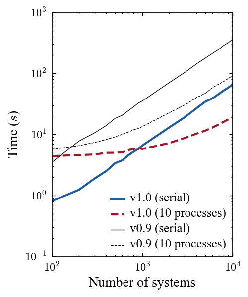
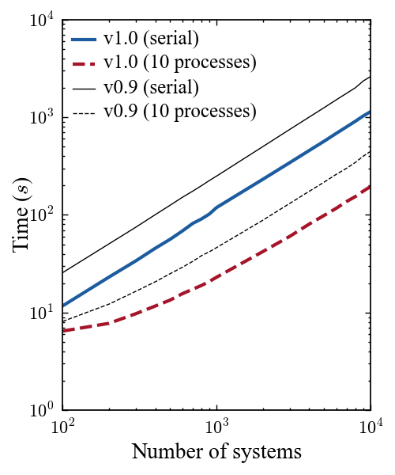
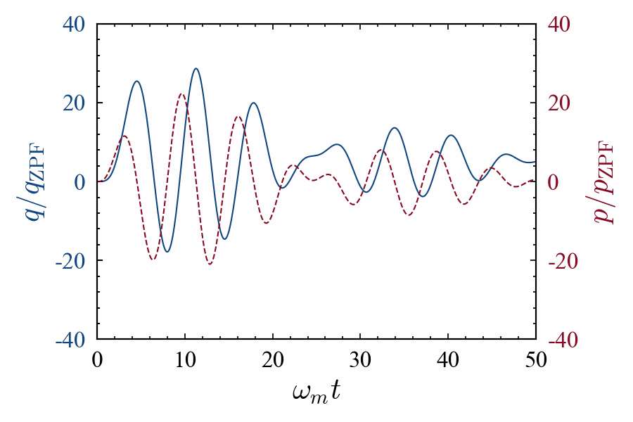
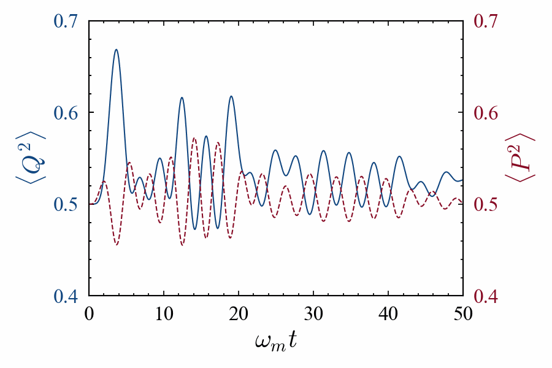
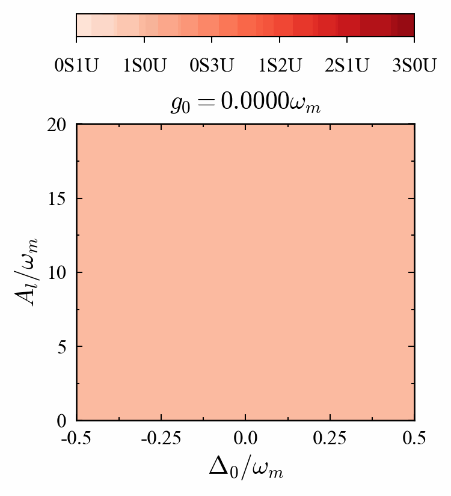
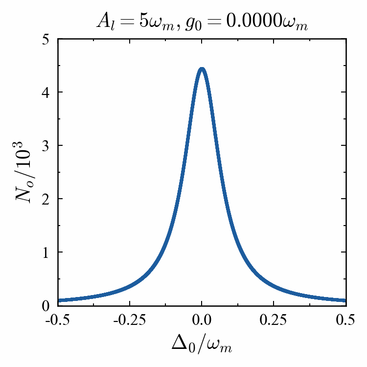
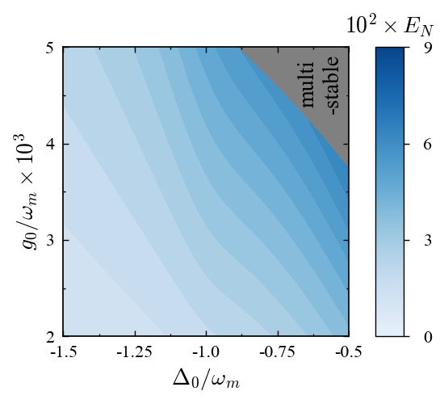
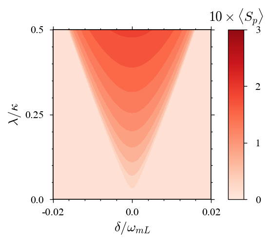

Welcome to the qom-v1.0.0 Documentation!¶
The Quantum Optomechanics Toolbox (packaged as qom) is a wrapper-styled, scalable toolbox featuring multiple modules for the calculation of stationary as well as dynamical properties of many-body quantum optomechanical systems.
Backed by numerical libraries like NumPy and SciPy, and featuring the highly customizable visualizations offered by Matplotlib and Seaborn APIs, the toolbox aims to serve as an easy-to-use alternative to writing code explicitly and avoiding repetitive exercises for presentable visuals.
Key Features¶
Run automatically-managed loops in parallel and pool results.
Solve for stability and classical/quantum signatures seamlessly.
Configure plots across plotting libraries with a common syntax.
What’s New in v1.0!¶
Non-linear Schrodinger equation solver with integration support.
Attractor detection and bifurcation for non-linear dynamical systems.
Huge performance boost with NumPy-based vectorization.
Dynamical Stability |
Quantum Correlations |
|---|---|
|  |  |
Runtimes for the calculation of dynamical stability of the steady state using the Routh-Hurwitz criteria. |
Runtimes for the calculation of average entanglement from the dynamical values of modes and correlations. |
Examples¶
Classical Amplitudes |
Quantum Fluctuations |
|---|---|
|  |  |
The classical mean values of the optical and mechanical modes are obtained using the rate equations of the modes. |
The variances of the quantum fluctuation quadratures are obtained using the rate equation for the correlation matrix. |
Limit Cycle |
Chaos |
|---|---|

|

|
Self-sustained oscillations in an optomechanical system. |
An optomechanical system in the chaotic regime. |
Dynamical Stability |
Optical Bistability |
|---|---|
|  |  |
Dynamical stability obtained from the steady state drift matrix. |
Bistability obtained from the steady state optical occupancies. |
Optomechanical Entanglement |
Mechanical Synchronization |
|---|---|
|  |  |
Quantum entanglement between the optical and mechanical modes of an optomechanical system. |
Quantum phase synchronization between the mechanical modes of two coupled identical systems. |
Wigner Distributions |
Optomechanical Solitons |
|---|---|

|

|
Wigner distribution depicting the evolution of mechanical squeezing in a modulated optomechanical system. |
Soliton propagation in an array of optomechanical systems at different phase lags between the input solitons. |
Installation¶
Dependencies¶
The toolbox requires Python 3.8+ installed, preferably via the Anaconda distribution.
Once Anaconda is set up, create and activate a new conda environment using:
conda create -n qom python
conda activate qom
The toolbox relies primarily on the libraries numpy (for fast numerical algebra), scipy (for numerical methods), sympy (for symbolic algebra), seaborn (for color palettes) and matplotlib (for plotting results).
These should be installed separately before installing the toolbox using:
conda install matplotlib numpy scipy sympy seaborn
Note
To run the GUI modules, pyqt should be installed separately.
Once the dependencies are installed, the toolbox can be installed via PyPI or locally.
Installing via PyPI¶
To install the packages via the Python Package Index (PyPI), execute:
pip install -i https://test.pypi.org/simple/ qom
Installing Locally¶
To install the package locally, download the repository as .zip and extract the contents.
Now, execute the following from outside the top-level directory, ROOT_DIR, inside which setup.py is located (refer to the file structure here):
pip install -e ROOT_DIR
Citing¶
Please cite S. Kalita and A. K. Sarma, *The QOM Toolbox: An object-oriented Python framework for cavity optomechanical systems*, Proceedings of Eighth International Congress on Information and Communication Technology **3**, Springer Singapore (2023) if you use our work in your research.